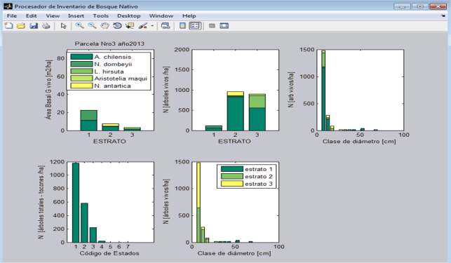
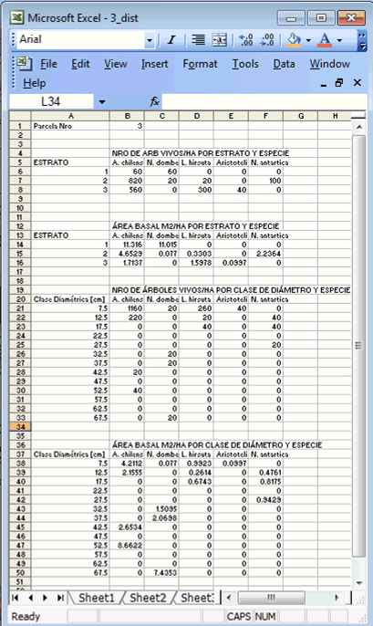

Para cada parcela
en la base de datos se genera un archivo de
imagen *.emf
conteniendo un panel de gráficos de barras apiladas,
además los datos tabulados se presentan en un archivo de formato Excel
2003-2007. Ambos se graban por defecto en el mismo directorio donde
está el archivo con los datos ingresados.
Los gráficos
superiores refieren al área basal, número de árboles
vivos por estrato, y por clase diamétrica apilados por
especie. Mientras que los gráficos de abajo son el número
de árboles totales por estado (vivos, muertos, toconoes,
caídos, etc) apilados por estrato en el caso del último
gráfico.

En las salidas
tabuladas se observa el número de árboles y área
basal por clase diamétrica, estrato y especie.
